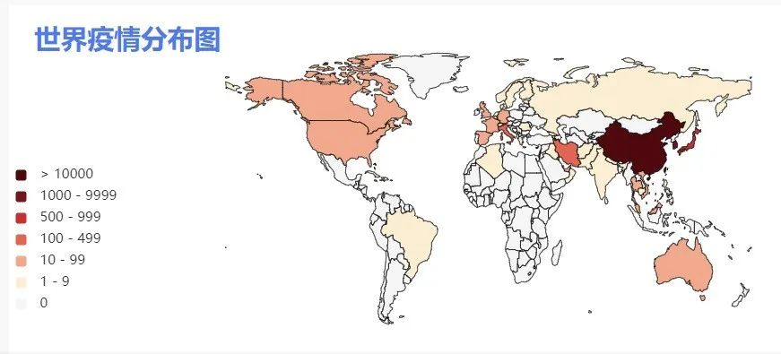
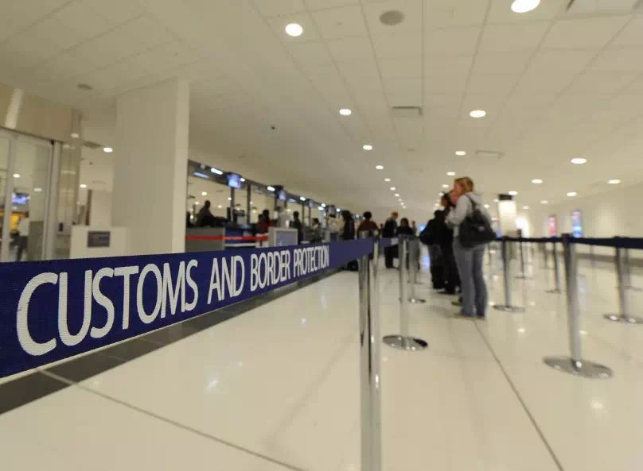
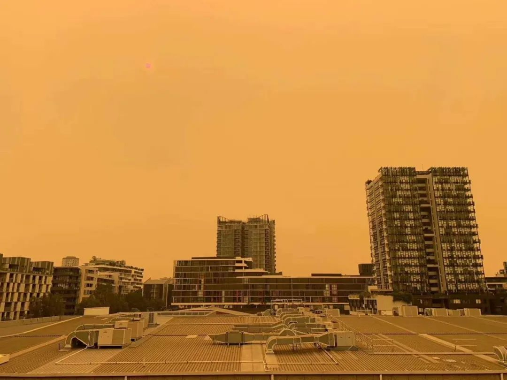
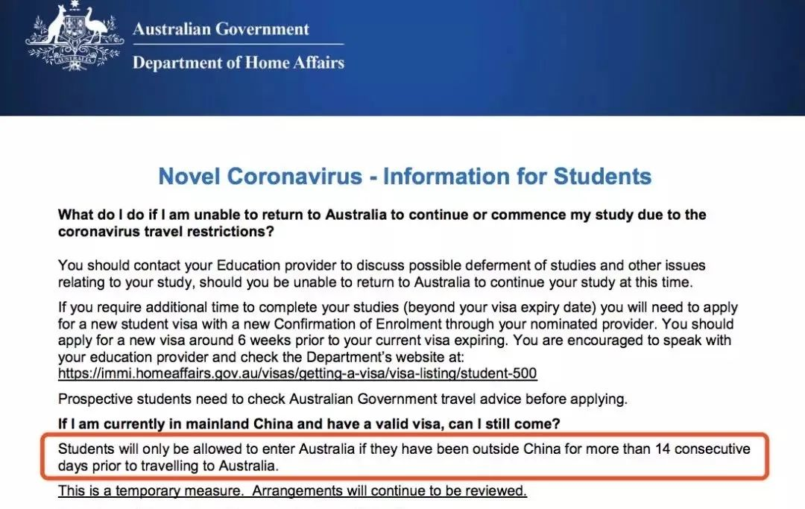
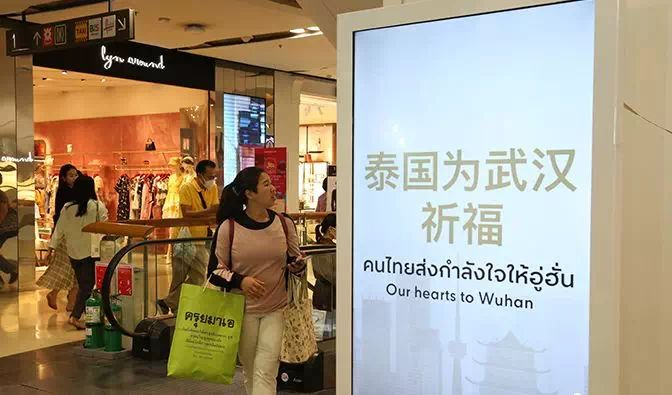
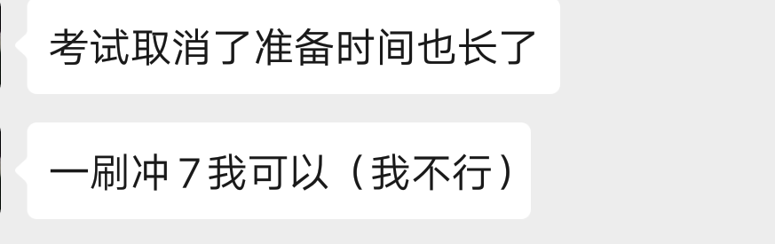

疫情下的中国留学生
原文链接 备份链接 春节结束，学生本该开始上课，但新冠病毒仍在肆虐。教育部发文《利用网络平台“停课不停学”》，各地学校纷纷开通在线课堂，但也因此引发不少问题，老师感慨不想当主播，同学无奈不想上网课。 除了国内学子面临“失学”问题，海外留学 …

大学的意义，不仅仅在于一节节课程，还在于学校提供的各种公共教学设施和公共生活空间。学生们身体的不在场，不可避免地让大学的意义变得模糊。
文 | 田蔚琪 陈星萌 林浩瑶 编辑 | 小豆
二月底本是澳洲大学秋季开学的日子，在澳洲完成本科学业的小何，也迎来了自己作为研究生的第一学期。本来他还庆幸自己在澳洲山火进一步蔓延前赶回了国，如今却因为疫情的影响回不了学校。
留学美国的悦悦决定先休学一学期。年初，美国政府宣布进入公共卫生紧急状态，2月2号后，禁止任何在过去14天曾到过中国境内的外籍旅客，进入美国境内。快要到期的签证，还看不到松动迹象的入境限制令，让悦悦焦头烂额，“第一次体会到想上学也上不了的心态。”
难以跨越的国境线
新冠病毒的跨国传播持续加速。2月23日，韩国将疫情预警上调至最高级别，27日，韩国累计确诊案例已经突破千例，远在欧洲的意大利全国累计确诊人数升至470例，成为欧洲疫情最严重的国家。世界卫生组织于24日表示，目前没有看到COVID-19在全球不受控制地蔓延，但要尽所能为潜在的大流行做好准备。

来源：新浪新闻数据统计截止至2月27日15时
美国、新加坡、澳洲等留学热门目的地，相继开启了中国公民入境管制。根据中国国家移民管理局整理的数据，截止到2月16日，采取入境管制措施的国家已经扩大到了133个。
在2020这个听上去颇具科幻色彩的年份，边境的开放措施却受疫情影响被缩紧。对这一届的留学生来说，求学的第一难题成了如何跨越国境线到达学校。除此之外，由于疫情防控需要，雅思、托福等考试纷纷取消，一批学生或许因此无法拿到入学offer（录取）。
“曲线入境”, 泰国成留学生热门中转地
2020年初，留学美国的悦悦的F-1签证快要到期了。她本来计划在圣诞假期回国时进行更新，可是没想到签证被行政审查，直到开学时也没有审批下来。正当她望眼欲穿等待签证时，1月31号，美国政府突然宣布进入公共卫生紧急状态，2月2日起禁止任何在过去14天内曾到过中国境内的外籍旅客进入美国境内。
遥遥无期的签证审查，暂时闭馆的美国大使馆，不知道什么时候解除的旅行禁令，让悦悦做出一个艰难的决定——她决定先休学一个学期，待疫情结束后再重返校园，参加秋季学期的课程。这意味着悦悦在学业、时间以及金钱上，将作出巨大的牺牲。

澳大利亚入境处
“不知道在哪里补这一整个学期的课，同时之前在机票改签上已经花费了很多钱，交的学费也不一定能退。”正在和校方交涉休学后相关事宜的悦悦，焦头烂额。“第一次体会到想上学也上不了的心态，”悦悦苦笑着说。
留学生小何也有同样的感受。去年10月底，刚刚在澳洲完成本科学业的小何，赶在澳洲山火进一步蔓延前回了国，准备假期之后再回到悉尼大学开启新的研究生生活。随着新冠肺炎疫情的暴发，小何的假期被迫“延长”。2月1日，澳大利亚总理莫里森宣布澳洲拒绝除永久居民外所有来自中国大陆的旅行者，2月12日，澳洲境外的澳洲学生签证办理暂时呈停摆状态。

去年12月的澳洲天空（受访者供图）
“现在学校决定2月24日开始远程上课。虽说一样都是上课，但上网课和在教室上课真的感觉差好远，特别像我这种新生，才第一学期什么经验都没有，很容易跟不上。”
对小何这种研一新生来说，棘手的还有之后的环境适应问题。为了让新生更快地适应与融入新环境，国外大学会在新生入学前一周举办迎新周。今年受疫情影响，准备赴澳学习的中国留学新生都只能错过迎新周了。小何无奈地说：“我原本还想提前一点回去，好更快适应融入的，结果现在不仅早不了，还要推迟这么多。”
像小何这样回不了学校的人还有很多。2月13日，澳洲移民局更新了措施，称学生只有在赴澳前，在中国大陆以外停留超过连续14天后，才会获准进入澳大利亚。

于是，一些不甘束手等待的学生们筹划起了“曲线入境”——先到第三国呆满14天，再从第三国出发到澳洲。泰国由于入境政策较为宽松，且物价较低，成了中转国首选地。

无法返澳的澳洲学生讨论入境事宜（受访者供图）
江江，一位在美国洛杉矶上学的学生，也迫不得已选择了这种“曲线入境”的方式。
她首先从广州飞到泰国曼谷，逗留两周后，再飞往洛杉矶。这期间所有的花费都只能自己承担。面对如此高昂的入境代价，江江虽然心痛却也无可奈何。
“总不可能不上学呀，而且这个学期我要毕业了。辛苦读了四年，最后连毕业证都拿不到就太亏了！”江江只能安慰自己要学会苦中作乐，“之前我都没去过曼谷，就当是去深度游了。”
如今，江江已经顺利入境美国，但是一些在澳大利亚上学的留学生的入境之旅，却没有那么顺利。
14天的隔离期未到，澳洲方又将入境限制延长了一周。一位选择在泰国中转的网友评论道：“我住的酒店大厅就可以凑齐悉尼、墨尔本等各大高校的学生。”

除了上网课，学校还给了另两个选择
留澳学生难以跨越赤道回到南半球，香港留学生也无法跨越一江之隔返学。
“我想读跟政策相关的专业，城大的公共管理是亚洲第一。”为了读自己感兴趣的专业，玲玲最终放弃了国内的保研机会，以及五个英国学校的offer，选择了香港城市大学进行研究生学业学习。但没想到，2019年的香港留学生，上半学年碰上了“修例风波”，下半学年遇上了新冠肺炎疫情，真正在学校上课的时间其实只有三个月。从去年11月14号学校宣布全面停课之后，玲玲就已回到家中，直到今年2月才用网课开启了新的学期。
1月28日，国家移民管理局暂停所有类别赴港澳旅游签证的受理与审批，香港各大高校也相继延迟了入学时间。
除了上网课，玲玲的学校还给了学生另外两个选择：一个是退学，一个是休学。但比起香港本地的学生，内地学生的选择空间十分有限，做出选择需要付出的代价也更为高昂。按照香港的租房惯例，从内地赴港读书的一年制硕士课程学生，一般都被要求在入住前付清接下来一年的房租费用。就玲玲来说，仅租房费用便花去了72000港币，居住率虽然不高，但房费不会有一丝的减免退还。

学校提供的选择邮件
香港的一年硕士课程的学费一般在10万到40万港币之间。玲玲就读的项目一年学费14万港币。学费不仅包括上课的课程，还包括课堂之外的许多资源，比如更多样化的教学讨论方式，图书馆、展览馆等公共教学设施的使用等。但在目前的情形下，几十万的学费，只买到了网课。
“我其实比较在意一些课堂以外的资源，包括学校的讲座，图书馆的workshop（培训），以及课程里面包含的fieldtrip（户外教学）……目前已经取消了两次fieldship（户外教学）了，现在不能在学校，我觉得挺可惜的。”玲玲说。

香港城市大学的展览馆
大学的意义，不仅仅在于一节节课程，还在于学校提供的各种公共教学设施和公共生活空间。学生们身体的不在场，不可避免地让学校的意义变得有所缺憾。当几十万的学费变成了买网课，千辛万苦拿到的入学资格，也变得有些价值模糊。
在不可抗力的因素面前，玲玲其实也是无辜的受害者。“遇到现在这些事，我都要不断自我心理建设。”
托福、GRE、雅思全停，申请之路难上加难
这一届的英国留学申请被称为最难的一届。
英国脱欧之后的签证利好政策，以及受香港的局势影响，申请人数和申请要求跟着英镑一起水涨船高。更麻烦的是，受疫情影响，3月份的托福、GRE、雅思全部停考，这让急需语言成绩的预留学生陷入了无限的焦虑之中。

鸽子是一名设计类专业大四的学生。为了申请一个好学校，大三那一年她开启了“爆肝”模式。“过程非常沧桑。”最后三个月，她平均每天睡眠时间4个小时，累了就直接睡在工作室的沙发上，连着一个月的时间没有沾床。
因为艺术设计最后的成品需要去摄影棚找摄影师拍大片，摄影师和模特都需要提前很久预约，模特要四个小时起拍，一小时花费400块，摄影师则一天一万，取消预约钱不退。为了设计出满意的作品，鸽子在拍片前36个小时没有合眼。
好在她的努力也得到了回报。她投了6个offer，在1月中旬的时候，英国皇家艺术学院（全球唯一的全研究制艺术院校）给她抛来了橄榄枝。因为英国艺术类的专业要求入学前提交成绩就可以，所以她必须在6月份之前把成绩考出来。当时没有想到雅思会被停考，她本来准备3月份考雅思，然后多刷几次分数。结果三月份报了两场考试，全被停掉了。
毕业设计也没有着落，设计类的同学需要拿出设计作品，鸽子已经做好了设计稿，但是工厂没有开门，也没有办法生产。中期和论文也都没写，“要是5月份开学的话就爽了，开学即毕业。”
听说17号的时候UKVI（签证及移民类雅思考试）会放考位，鸽子蹲到凌晨，却发现没有开放。因为有亲戚在加拿大，鸽子也考虑过去加拿大考，但是现在出国并不方便，也没有直航的机票，只能转机，“而且也有 ‘投毒’的嫌疑。”
鸽子决定还是继续等，“总不能不开吧。反正考试取消了，准备时间也长了。一刷冲7我可以。”

对于毛毛来说，他的计划也全都被打乱了。
他今年大三，本来打算出国和考研同时准备，现在的他在提前准备语言。1月16号的时候他在家考过一次雅思，但是没有拿到理想的成绩，短暂调整后他又报了2月24日的雅思考试，本来计划着过完元宵就回学校上面授课，但是考试取消了，而且在学校的面授课也没办法继续上了。
在毛毛的计划里，四月中旬就要结束雅思的学习，开始准备考研的内容了，“考个好点的研究生最起码也要9个月，不能没有书读啊。”
（应被采访者要求，文中人物皆为化名。）
来源｜南都周刊
END
欢迎分享到朋友圈，如想取得授权请邮件：newmedia@nbweekly.com。如果想找到小南，可以在后台回复「小南」试试看哦~

原文链接 备份链接 春节结束，学生本该开始上课，但新冠病毒仍在肆虐。教育部发文《利用网络平台“停课不停学”》，各地学校纷纷开通在线课堂，但也因此引发不少问题，老师感慨不想当主播，同学无奈不想上网课。 除了国内学子面临“失学”问题，海外留学 …
原文链接 备份链接 应该做一个自私的人，还是坚持自己：做一个对社会有用的人？ 口述 | 高 集 整理 | 沈 林 今天是我自愿隔离在家的第14天，按理说，我已经可以正常出门了。但是最近发生的事，让我的心情很复杂。 我叫高集，20多岁的时 …
原文链接 备份链接 从一开始，余昌平就想过自己可能会被感染。他是武汉大学人民医院呼吸与危重症医学科的医生，疫情发生后，他成为医院冠状病毒防治专家组的成员。 专家组成员被感染？听起来有点严重。余昌平觉得很正常：“接触那么多病人，总是会感染 …
原文链接 备份链接 留学生和学校都在承担损失限制入境、第三国隔离、无限期延期开学……新冠病毒疫情当前，回国过年的留学生面临返校难题。从已经进行交通封锁和管制的鄂中城市，到疫情并不严重的其他省市，需要返校的留学生都面临不同困境。而伴随延期 …
原文链接 备份链接 上一篇文章提到港大要求内地学生回到香港后进行14天自我隔离才能返回宿舍和校园，而当时学校没有明确解决隔离住所和吃饭这些问题。这一篇文章来记录学校和港府后续的措施。我对学校确实有很多不满意的地方，但是我也意识到，在针对个 …